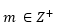

En un árbol con raíz, un vértice V con grado de salida igual a 0 se denomina hoja. Los restantes vértices se denominan nodos de ramificación ,o bien, vértices internos.
Si R= (V,A) es un árbol con raíz yentonces R se denomina árbol m-ario si el grado de salida de V es m para los vértices internos . Cuando m=2 se dice que el árbol es un árbol binario. Como se ve el la siguiente imagen.